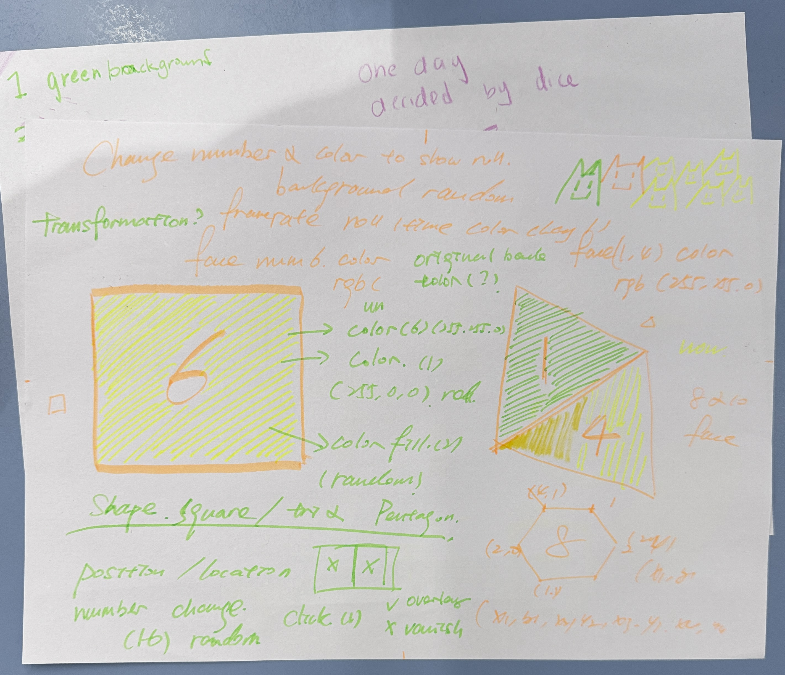
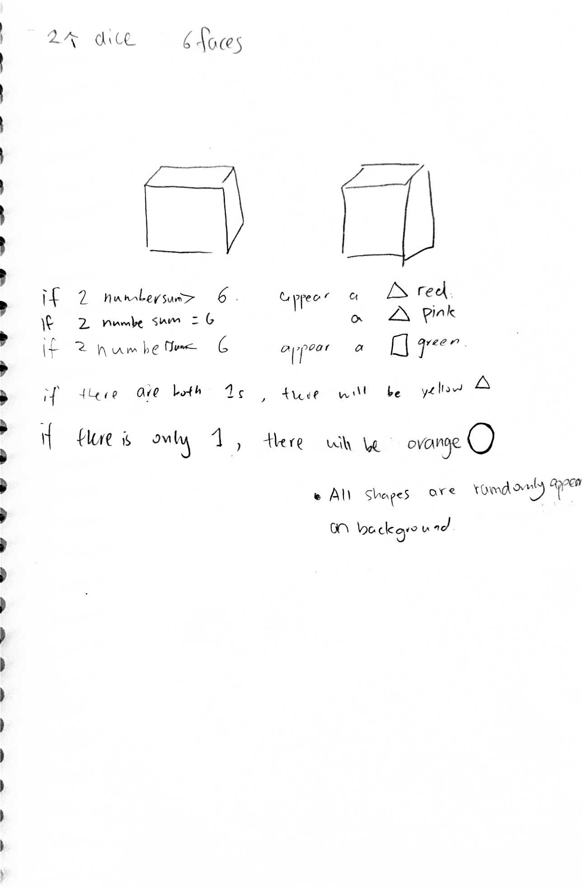
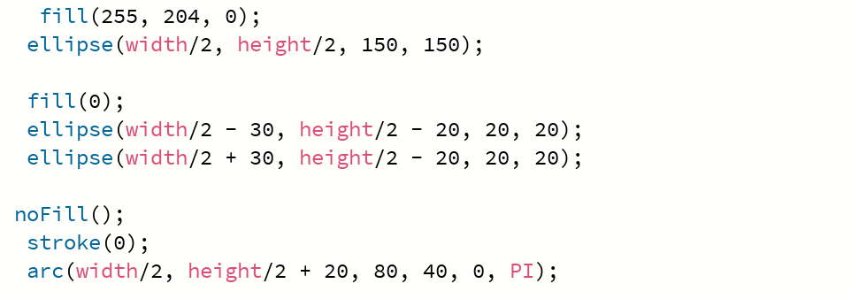
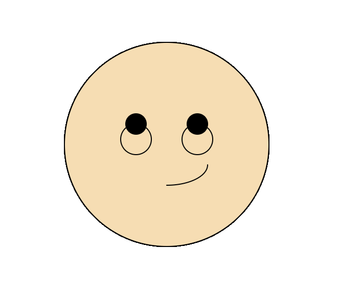
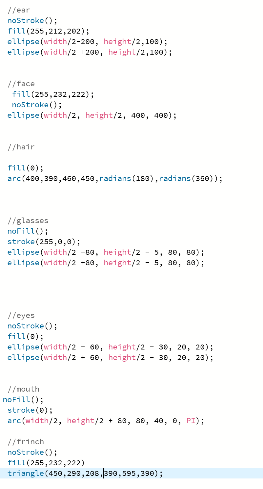
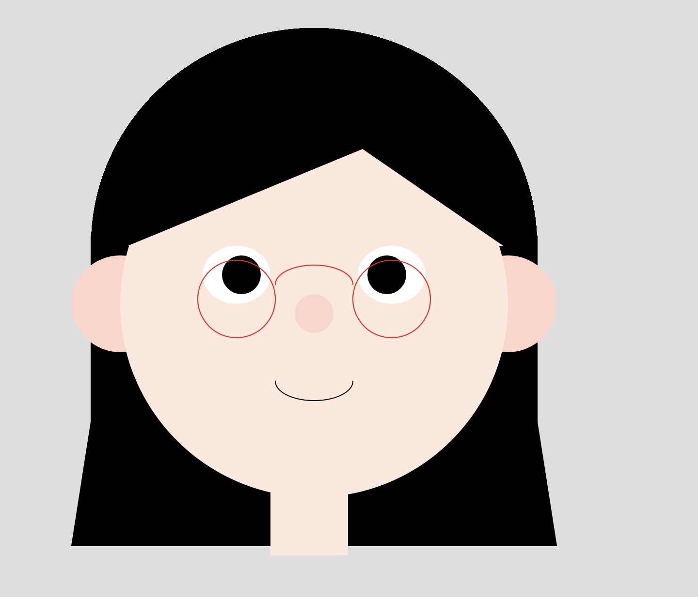
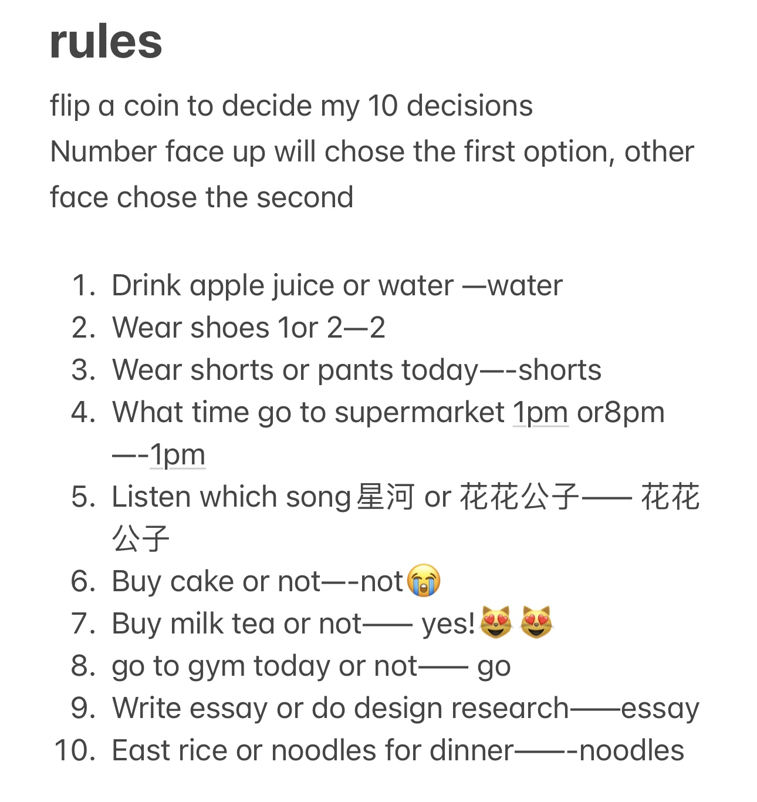
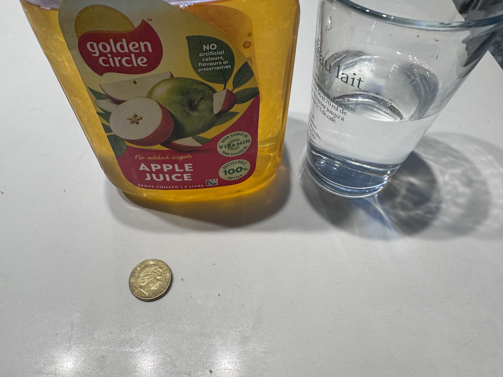
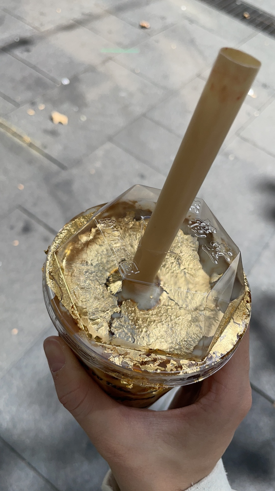

In this week's lesson we also learned how to make a dice game. In class we discussed how to make some rules.
After the class I started making this game myself but I found the rules were a bit too complicated So I decided to redo him. I will have two 6-sided dice in the center of the tableau. Each time the mouse clicks, the numbers will be changed at will. If the sum of the numbers of the two dice is greater than 6. A red triangle will appear. If it is less than 6, a pink triangle will appear. Please see pictures for details
The second assignment was to draw a portrait of my classmate next door. I want to use geometric figures to describe it, two blacks as eyes and arcs as mouths
Then I adjusted the size and started to draw her glasses. I used two nofill circles, and then I started to adjust the details, and then added the hair at the back.
  The third assignment is to use dice to determine the 10 outcomes of the day.
  